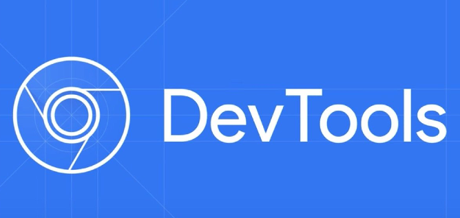

lowercase vahendid
Mis on lowercase vahendid ja mille jaoks neid kasutatakse?
„alumise taseme" CASE vahendid (lower CASE tools) keskenduvad teostusele, kus mudelitest saab tegelik tarkvaratoode. Nad toetavad andmebaasi struktuuri genereerimist, koodi genereerimist, testide läbiviimist, koodi versioonihaldust, konfiguratsioonihaldust, pöördprojekteerimist jms. Näiteks: Windows Notepad, Thony, Visual Studio Code, PyCharm, Xdebug, Chrome DevTools, GNU Compiler Collection, Microsoft Excel, Prettier jt.
Milliseid lowercase vahendeid olen ise juba kasutanud
Visual Studio Code
Mida tööristaga saab teha
Saab kirjutada ja redigeerida koodi paljudes programmeerimiskeeltes, kasutada laiendusi nagu Git integreerimiseks, debuggimiseks ja koodianalüüsiks. Toetab ka kaugarendust ja mitmekesiseid töövooge.
Töörista kasutajaliidest pilt

Chrome DevTools
Mida tööristaga saab teha
Võimaldab inspekteerida ja redigeerida veebilehtede HTML-i, CSS-i ja JavaScripti otse brauseris. Saab jälgida võrguaktiivsust, mõõta lehe jõudlust ja tuvastada optimeerimisvõimalusi.
Töörista kasutajaliidest pilt
Milliseid lowercase vahenditest veel kasutanud ei ole
PyCharm
Mida tööristaga saab teha
Sobib Pythoniga arendamiseks, pakkudes tuge erinevatele raamistikudele nagu Django ja Flask. Sisaldab funktsioone nagu koodi analüüs, versioonihaldus, testimise tugi ja võimekas debugija.
Töörista kasutajaliidest pilt
Xdebug
Mida tööristaga saab teha
PHP debuger, mis aitab leida ja parandada koodivigu, pakkudes sammu-põhist jälgimist ja virnapõhiste jälgede analüüsi. Võimaldab ka profiilimist ja integreerub hästi IDE-dega nagu PhpStorm.